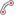

Alberti Help
Contents
- Introduction
- The Workspace
- Tools
- Auto-Snap
- The Layer Panel
- Creating and Deleting Layers
- Naming Layers
- Hiding and Showing Layers
- Changing Layer Order
- Color-Coding Layers
- The Main Menu
- Underlays
- Hotkeys
- Resources
Introduction
Alberti is a browser-based perspective drawing and layout application, named after Leon Battista Alberti, who quantified modern perspective drawing in his treatise "Della Pittura".
Why is Alberti needed?
Undertaking a complex, accurate perspective drawing requires an enormous amount of physical space. Depending on the requirements of the drawing, a 14x17 in. layout might require a drafting table 5 feet wide and 10 feet deep. Furthermore, you would need a number of impractically large tools: a straight-edge, a drafting triangle, possibly a compass fashioned out of a peg and string.
In short, it makes perfect sense to do this in software.
Then why not use an existing solution like AutoCAD or 3ds Max? Because these tools are overkill. Alberti provides a streamlined interface tailored specifically to rapid, natural perspective drawing.
The Workspace
When Alberti is first loaded, you will see an empty workspace. This is the canvas on which shapes are drawn. An 'X' marks the center of the workspace, which spans infinitely in all directions.

The workspace center.
Navigating the Workspace
Zooming and Panning
Panning is the act of translating, or changing, the horizontal or vertical position of the workspace. To pan, hold down either the alt or E key. While holding down either key, click and drag to pan the workspace.
Zooming is the act of moving closer to or away from the workspace. To zoom in, scroll the mousewheel up. To zoom out, scroll down. Zooming occurs relative to the position of the mouse cursor; in other words, the point under the mouse remains stationary during a zoom, while other points move away from or converge toward the mouse depending on whether you are zooming in or out.
The Navigation Bar
Hovering at the top of the workspace is the navigation bar. The buttons here allow you to rapidly pan around the workspace.

The navigation bar.
The home button () centers the workspace in the browser window.
The other two buttons involve what are called markers. Markers can be placed anywhere in the workspace using
the marker tool. The left button ( ) pans
to the next marker, the right button (
) pans
to the next marker, the right button ( ), the previous marker (hotkeys
space and shift-space respectively). As you cycle
through markers, Alberti will also remember and pan to the last manually-panned position in the workspace.
), the previous marker (hotkeys
space and shift-space respectively). As you cycle
through markers, Alberti will also remember and pan to the last manually-panned position in the workspace.
Tools
Hovering at the left side of the workspace is the tool bar. To select a tool, click on it.
Most tools have hotkeys that allow you to select them with the keyboard. Hovering the mouse over a tool displays
its name and associated hotkey in brackets.

The tool bar. Tools from top to bottom: Selection Tool, Line Tool, Arc Tool, Perspective Arc Tool, Bezier Tool, Marker Tool. The selection tool is currently selected.
Each tool is capable of performing an action or drawing a shape based on a series of steps (usually involving a mouse click). The number of steps involved varies from tool to tool, several of them having optional steps.
All tools follow the same convention: the optional steps can be skipped by either pressing enter/return, or by right-clicking (which is equivalent to a left-click followed by enter/return). This is referred to as completing the tool. You may revert to a previous step at any time prior to completing a tool by pressing the escape key. Each tool is discussed in detail below with optional steps indicated by faded step numbers.
 Line Tool
Line Tool
The line tool draws lines aligned to points. It can be thought of as a straightedge.
Steps
Click anywhere in the workspace to define a reference point.
Click to define a second reference point. The line will be drawn along the resulting path.
Click to place the beginning of your line.
Click to place the end of your line and complete the tool.
During step 2, the shift key may be held down to constrain the line to angles of 45°.
 Arc Tool
Arc Tool
The arc tool draws circles and circular arcs. It can be thought of as a compass.
Click anywhere in the workspace to place the center of the circular arc.
Click elsewhere to set the radius of the arc.
Click to begin sweeping an arc.
Click elsewhere to complete the arc.
Repeat steps 3-4 as desired, or press enter or right-click to complete the tool.
During step 2, the shift key may be held down in order to match the last-used arc radius. This is crucial for many geometric constructions.
Perspective Arc Tool
The perspective arc tool draws arcs in perspective, thereby producing ellipses or elliptical arcs. This is useful for constructing arches, circular windows, etc. in perspective. When approaching such a problem by hand, one generally starts with a rectangle in perspective and then inscribes the ellipse in that rectangle. The perspective arc tool operates on the same principle.

An ellipse projected in perspective.
Steps
Click to place the first "corner" of the perspective projection.
Click to place the second corner.
Click to place the third corner.
Click to place the fourth corner. This creates the projected ellipse.
Click to begin sweeping an arc.
Click elsewhere to complete the arc.
Repeat steps 5-6 as desired, or press enter or right-click to complete the tool.
In order to accurately place the corners of the ellipse projection, use Alberti's auto-snap feature.
 Bezier Tool
Bezier Tool
The bezier tool allows you to draw arbitrary curves. It can be thought of as a French curve.
Steps
Click to place the beginning of the curve.
Click to place the end of the curve.
Click to place the control point of the curve. This completes the curve.
It is possible to accurately construct a curve in perspective by using auto-snap to place its control points.
The ogive of a lancet window is constructed by placing the control points of its constituent curves at the intersections of appropriate vanishing lines.
 Selection Tool
Selection Tool
The selection tool selects shapes. Once a shape is selected, it can be deleted by pressing backspace or delete, or by selecting Edit > Delete from the main menu. You can also cut the shape by selecting Edit > Cut. Selections are indicated by dashed lines and black endpoint markers.
An unselected shape (left) and a selected one (right).
In Alberti, once a shape is created it cannot be modified, even when selected. This is admittedly unusual for a vector-based drawing program, but is by design. The idea is that each shape is like a mark made by a pencil; it can be erased, but not changed.
Steps
Click and hold the mouse button down.
Drag the mouse to expand the selection box.
Release the mouse button. Any shapes enclosed by or intersecting with the selection box will be selected.
To add shapes to or remove shapes from an existing selection, simply hold down shift as you release the mouse button in step 3. Selected shapes within the selection box will be deselected while unselected shapes will become selected.
It is possible to "pick" single shapes by simply clicking on a shape without dragging. You can also pick intersections using auto-snap. All shapes that intersect at the snap point will be selected.
Marker Tool
Use the marker tool to place markers around the workspace. Markers are best placed at landmarks that you often frequent, such as vanishing points.
Steps
Click anywhere in the workspace to place a marker.
Cycle between markers at any time using the navigation bar or associated hotkeys.